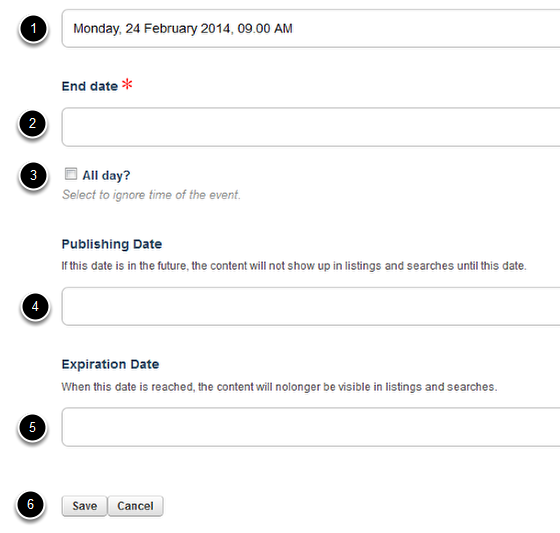

This gives you a general overview of how to add a new seminar. The event title and date are compulsory; all the other fields are optional.
To add a new Seminar go to the Seminars section of the website and click on Add new... on the right hand side of the top toolbar.
Click on Event.
You can enter the following seminar/event information: 1. Name of your seminar/event (this is compulsory). 2. If you enter a short title this will form the last part of the web address of your page (eg the wilkins part of the following address: http://www.dpag.ox.ac.uk/seminars/wilkins). If you don’t enter a short title this part of the web address will be the title of your seminar/event. 3. Short description. This displays in a slightly larger font than text entered into the text box (no. 8). 4. You can include an image on your seminar page. 5. Enter a caption for your image. 6. Copyright information - this displays in small white text in the top right hand side of your image. 7. You can include a YouTube video on the page instead of an image. Enter the web address of the YouTube video in the Video link (YouTube) field. 8. Text box - enter any other information about the seminar in here. 9. If event types have been set up you can select one from the drop down list. 10. Enter the speaker’s name - this displays under the seminar title. 11. Enter the seminar location. 12. If you would like a google map on the page showing the location enter the address or postcode here. 13. Enter a contact name. 14. You can enter a contact URL - the contact name will become a link to this page. 15. If categories of seminars have been set up you can allocate your seminar to one of these.
Before you can save your event you need to select the dates of the event.
Go back to the top of the page and select Dates from the I want to edit drop down list.
